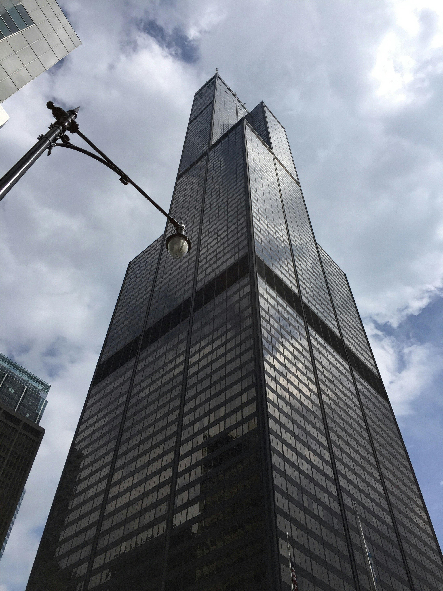

What to do in Chicago
A whole city to explore!
Activities
Visit the Art Institute of Chicago
One of the oldest and most renowned art museums in the U.S., the Art Institute houses iconic works like Grant Wood’s American Gothic and Georges Seurat’s A Sunday on La Grande Jatte. Its diverse collection spans ancient artifacts to contemporary installations.

Walk the Chicago Riverwalk
This scenic pedestrian path along the Chicago River offers stunning architecture, public art, and waterfront dining. You can rent a kayak, hop on a boat tour, or simply enjoy the views of the city’s historic bridges and skyscrapers.
Experience the Skydeck at Willis Tower
Located on the 94th floor, this observation deck offers panoramic views of the city skyline and Lake Michigan. For a thrill, try TILT, a moving glass platform that leans you outward over the edge of the building. It's a unique way to experience Chicago from above.
